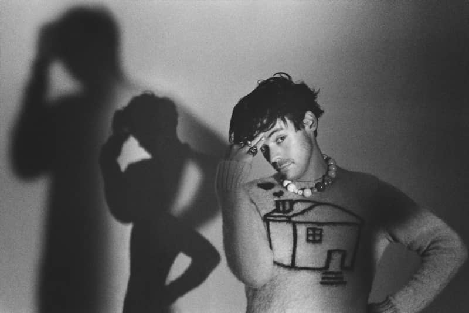

Welcome to Harry Styles Fan page!
Harry Styles, known for being kind, cheeky, humble, and super talented. On this site you can get to know all about his career and achievments. Hey guess what? Harry is currently on tour! Click here and check if you can buy some tickets.
Get to know the path that led him to be the A list mega star that he has become at his young age. From his early days to his increasing acting career, if there is anything you want to know about him this is the place to find it!
Singer, song-writter, musician and actor. Harry Styles is one of the most popular artist at the moment. His kind personality and his increible talent has led him to what seems to be a path to becoma a future icon.
You can go to our 'Contact us' section and: Subscribe to our site and be the first to know all the news about the artist. Leave any subjections to better ourselves and improve.
Check below all Harry's latest updates, press F on your keyboard if you want fullscreen.

